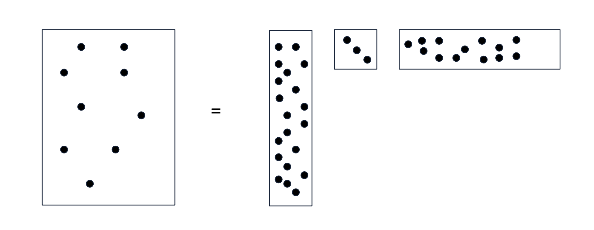
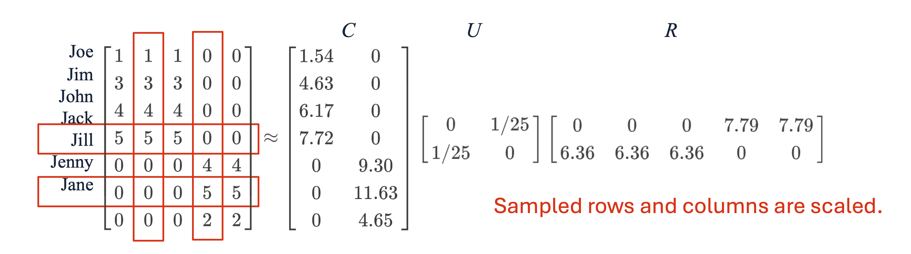
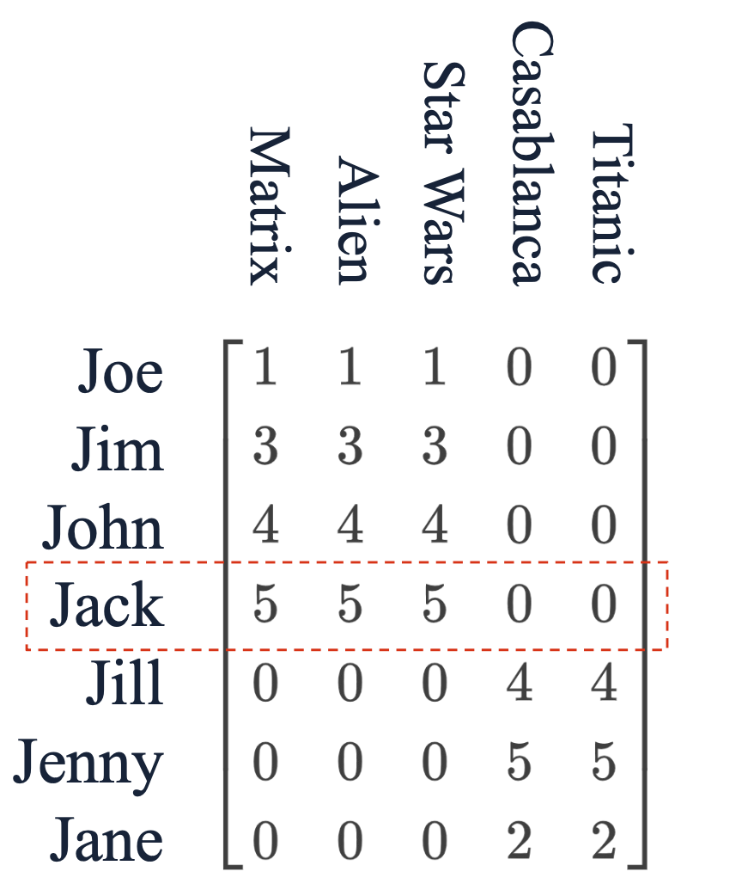
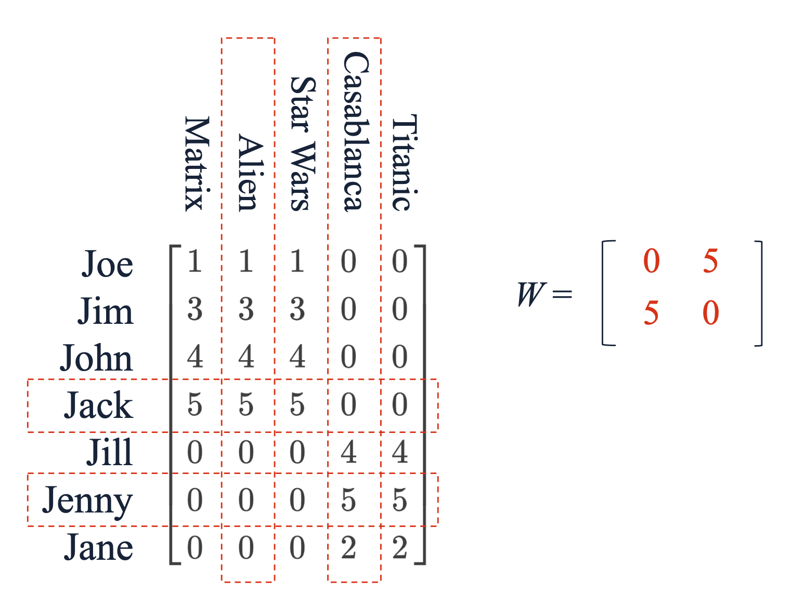
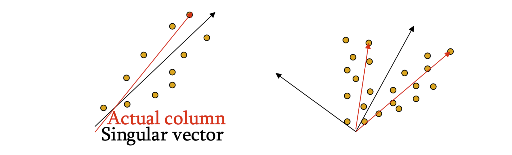

1. 들어가며: SVD의 현실적 한계와 희소성(Sparsity)
이전 포스트들에서 살펴본 특이값 분해(SVD)는 수학적으로 가장 최적의 하위 랭크 근사를 제공하는 강력한 기법이었습니다. 하지만 실제 데이터 마이닝 환경에서 고객-상품(Customer-Product) 관계를 나타내는 거대한 데이터 행렬 \(M\)은 대부분 비어있는 희소 행렬(Sparse Matrix) 형태를 띱니다.
SVD의 치명적인 단점은, 원본 데이터가 아무리 희소하더라도 분해 결과로 나오는 좌측/우측 특이 벡터 행렬인 \(U\)와 \(V\)가 완전한 밀집 행렬(Dense Matrix)이 된다는 것입니다. 비록 대각 행렬인 \(\Sigma\)는 희소하지만 크기가 매우 작아 전체 메모리 효율성에 큰 도움이 되지 않습니다. 수십억 단위의 행과 열을 가진 데이터에서 조밀한 행렬을 메모리에 올리는 것은 컴퓨팅 자원의 낭비이자 불가능에 가깝습니다.
이러한 SVD의 한계를 극복하고, 원본 데이터의 희소성을 그대로 보존하면서 차원을 축소할 수 있는 현실적인 대안이 바로 CUR 분해(CUR Decomposition)입니다.
2. CUR 분해의 개념과 구조
2.1. 정의
CUR 분해의 목표는 복원 오차인 \(||M-CUR||_{F}\)를 최소화하면서 원본 행렬 \(M\)을 세 개의 행렬 \(C, U, R\)의 곱으로 근사하는 것입니다.
\(m \times n\) 크기의 원본 행렬 \(M\)에 대한 CUR 분해는 다음과 같이 구성됩니다: * \(C\) (\(m \times r\) 행렬): 원본 행렬 \(M\)에서 무작위로 추출한 \(r\)개의 열(Columns)들로 구성됩니다. * \(R\) (\(r \times n\) 행렬): 원본 행렬 \(M\)에서 무작위로 추출한 \(r\)개의 행(Rows)들로 구성됩니다. * \(U\) (\(r \times r\) 행렬): \(C\)와 \(R\)의 교집합 정보를 바탕으로 오차를 최소화하도록 수학적으로 정교하게 구성된 작은 밀집 행렬입니다.

2.2. 특징
CUR은 \(C\)와 \(R\)을 구성할 때 인공적인 선형 결합 축을 만드는 것이 아니라, 원본 행렬에 실제로 존재하는 행과 열을 그대로 샘플링하여 사용합니다.

위 도식처럼 원본의 희소성(0이 많은 특성)이 유지되어 메모리 효율이 극대화됩니다. SVD와 달리 CUR은 언제나 “근사치(Approximation)”만을 제공하지만, \(r\)(개념의 수)이 커질수록 \(M\)으로 수렴한다는 이론적 배경이 존재합니다.
3. 샘플링 및 스케일링 알고리즘 (Choosing C and R)
3.1. 가중치 기반 샘플링 (Weighted Sampling)
행과 열을 추출할 때 모든 행/열을 균등한 확률로 뽑는 것은 최적이 아닙니다. 복원 오차를 효과적으로 줄이기 위해서는 값이 더 크고 유의미한 패턴이 많은 행/열을 더 자주 뽑아야 합니다.
이 중요도는 행이나 열의 Frobenius Norm(원소의 제곱합)으로 측정됩니다. 원본 행렬의 총 에너지를 \(f = ||M||_{F}^{2}\) 라고 할 때, 특정 행과 열이 선택될 확률은 다음과 같습니다: * \(i\)번째 행이 선택될 확률: \(p_{i} = \frac{\sum_{k}m_{ik}^{2}}{f}\) * \(k\)번째 열이 선택될 확률: \(q_{k} = \frac{\sum_{i}m_{ik}^{2}}{f}\)

3.2. 스케일링 (Scaling)
선택된 행과 열은 샘플링의 편향을 보정하기 위해 각 원소들을 스케일링해야 합니다. \(k\)번째 열의 각 원소는 다음 값으로 나눕니다: \[\text{Scaled Element} = \frac{m_{ik}}{\sqrt{r q_{k}}}\]
- \(\sqrt{r}\): 선택하는 잠재 개념의 개수 \(r\)에 따라 변하는 스케일을 하나로 통일합니다.
- \(\sqrt{q_{k}}\): 빈번하게 뽑히는 열과 그렇지 않은 열 간의 중요도 스케일을 통일해 줍니다.
[예시 계산]
어떤 평가 행렬의 전체 프로베니우스 노름 제곱 \(f=243\)이라고 합시다. Jack 행 벡터가 \([5, 5, 5, 0, 0]\)이라면, 노름 제곱은 \(5^2+5^2+5^2 = 75\)입니다. * Jack 행이 선택될 확률 \(p = \frac{75}{243} \approx 0.309\) 입니다. * \(r=2\)로 설정했다면, 분모는 \(\sqrt{2 \times 0.309} \approx 0.786\)이 됩니다. * 선택된 Jack의 행은 스케일링되어 \(R\) 행렬에 \([6.36, 6.36, 6.36, 0, 0]\) 으로 삽입됩니다 (\(5 \div 0.786 \approx 6.36\)).
4. 교차 행렬 U의 구축 (Constructing the Middle Matrix)
행렬 \(C\)와 \(R\)이 확률적으로 무작위 샘플링되었다면, 가운데 행렬 \(U\)는 전체 오차를 최소화하도록 결정론적(Deterministic)으로 계산됩니다.
4.1. 교집합 행렬 \(W\)와 SVD
먼저 \(r \times r\) 크기의 교집합 행렬 \(W\)를 생성합니다. 이는 원본 행렬 \(M\)에서 \(C\)에 선택된 열 인덱스와 \(R\)에 선택된 행 인덱스가 교차하는 지점의 원소들로 구성됩니다.

구해진 행렬 \(W\)에 대해 SVD 연산을 수행하여 \(W = X \Sigma Y^{\top}\)를 얻습니다.
4.2. 무어-펜로즈 유사역행렬과 최종 산출
\(U\)를 구하기 위해 \(\Sigma\)의 무어-펜로즈 유사역행렬인 \(\Sigma^{+}\)를 계산합니다. 대각 원소가 \(\sigma \ne 0\) 이라면 역수인 \(\frac{1}{\sigma}\)로 바꾸고, \(0\)이라면 그대로 \(0\)으로 둡니다.
마지막으로 도출된 성분들을 이용해 \(U\) 행렬을 계산합니다: \[U = Y (\Sigma^{+})^{2} X^{\top}\]
[예시 계산]
- \(W = \begin{bmatrix} 0 & 5 \\ 5 & 0 \end{bmatrix}\) 이므로 SVD 결과는 \(X = \begin{bmatrix} 0 & 1 \\ 1 & 0 \end{bmatrix}, \Sigma = \begin{bmatrix} 5 & 0 \\ 0 & 5 \end{bmatrix}, Y^{\top} = \begin{bmatrix} 1 & 0 \\ 0 & 1 \end{bmatrix}\) 가 됩니다.
- \(\Sigma^{+} = \begin{bmatrix} 1/5 & 0 \\ 0 & 1/5 \end{bmatrix}\) 입니다.
- \(U = Y (\Sigma^{+})^{2} X^{\top} = \begin{bmatrix} 1 & 0 \\ 0 & 1 \end{bmatrix} \begin{bmatrix} 1/25 & 0 \\ 0 & 1/25 \end{bmatrix} \begin{bmatrix} 0 & 1 \\ 1 & 0 \end{bmatrix} = \begin{bmatrix} 0 & 1/25 \\ 1/25 & 0 \end{bmatrix}\).
5. SVD와 CUR의 기하학적 직관 비교
SVD와 CUR이 데이터를 어떻게 대표(Represent)하는지 기하학적 관점에서 뚜렷한 차이가 있습니다.

- SVD (Centroids 역할): 데이터 공간의 분산을 계산하여 원래 데이터에는 존재하지 않더라도 전체를 가장 잘 설명하는 새로운 직교 방향(New representative directions)을 창조합니다.
- CUR (Clustroids 역할): 데이터 포인트들 중에서 가장 대표성을 띠는 실제 데이터 지점(Representative points)을 그대로 뽑아내어 축으로 삼습니다.
이러한 특성 덕분에 CUR은 데이터의 행과 열이 “실제 사용자”나 “실제 상품”을 지시하므로, SVD보다 결과 해석이 훨씬 직관적이고 용이하다는 실무적 강점을 지닙니다.